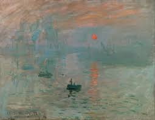

Claude Monet
French Impressionist PainterClaude Monet was a pioneering figure of the Impressionist movement, known for his dedication to capturing light and atmosphere in natural scenes. His innovative approach inspired generations of modern artists.
Masterwork

Impression, Sunrise (1872)
Medium: Oil on canvas
Dimensions: 48 cm × 63 cm
"Impression, Sunrise" is the painting that gave name to the Impressionist movement. It depicts the port of Le Havre at sunrise with loose brushwork and an emphasis on light and color. The work broke traditional artistic conventions and emphasized perception and feeling over detail.